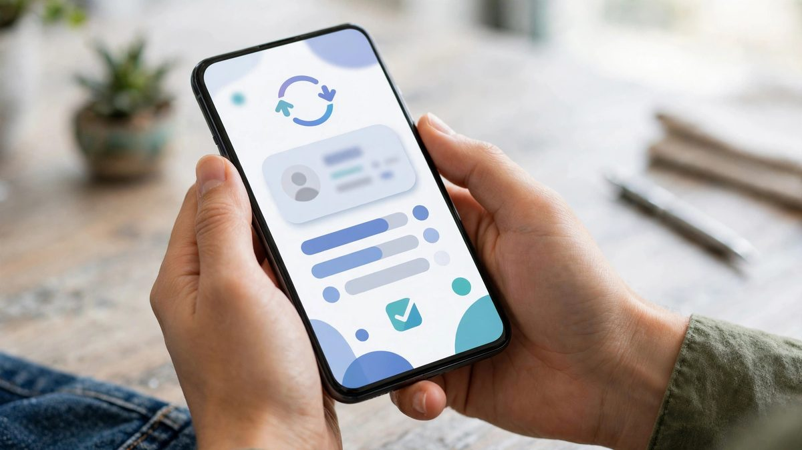

پاکستان سے آن لائن رقم بھیجنے اور وصول کرنے کے محفوظ طریقے

فری لانسر ہو، بیرونِ ملک مقیم پاکستانی ہو، یا آن لائن کاروبار کرتا ہو — رقم کا محفوظ لین دین ہر ایک کی بنیادی ضرورت ہے۔ پاکستان میں پے پال دستیاب نہیں، لیکن اس کا مطلب یہ نہیں کہ آپشنز نہیں۔ یہاں تمام قابلِ اعتماد طریقے، ان کی فیس اور احتیاطی تدابیر بیان کی گئی ہیں۔
1۔ بینک ٹرانسفر (IBFT)
پاکستان کے اندر ایک بینک سے دوسرے بینک رقم بھیجنے کا سب سے عام طریقہ انٹر بینک فنڈز ٹرانسفر ہے۔ تمام بڑے بینکوں کی موبائل ایپس (ایچ بی ایل، ایم سی بی، الائیڈ، میزان) میں یہ سہولت موجود ہے۔ رقم عموماً چند منٹ میں منتقل ہو جاتی ہے۔ چھوٹی رقم پر فیس نہ ہونے کے برابر، بڑی رقم پر معمولی چارجز ہوتے ہیں۔
2۔ موبائل والیٹس: ایزی پیسہ اور جاز کیش
جن کے پاس بینک اکاؤنٹ نہیں، ان کے لیے ایزی پیسہ اور جاز کیش بہترین ہیں۔ صرف موبائل نمبر پر رقم بھیجی جا سکتی ہے، اور ملک بھر میں ہزاروں ایجنٹس سے کیش نکلوایا جا سکتا ہے۔ چھوٹی ادائیگیوں اور گھریلو منتقلی کے لیے یہ سب سے آسان طریقہ ہے۔
3۔ بیرونِ ملک سے رقم: وائز اور پے اونیر
اگر آپ فری لانسنگ سے ڈالر کماتے ہیں تو پے اونیر (Payoneer) اور وائز (Wise) آپ کے بہترین دوست ہیں۔ دونوں سے آپ کو امریکی/یورپی بینک اکاؤنٹ کی تفصیلات ملتی ہیں، کلائنٹ وہاں ادائیگی کرتا ہے، اور آپ رقم پاکستان کے بینک میں منتقل کر لیتے ہیں۔ وائز کا ایکسچینج ریٹ عام طور پر بہتر ہوتا ہے۔
4۔ ریمیٹنس: روشن ڈیجیٹل اکاؤنٹ
بیرونِ ملک مقیم پاکستانی روشن ڈیجیٹل اکاؤنٹ کے ذریعے پاکستان میں سرمایہ کاری اور رقم بھیج سکتے ہیں۔ یہ اسٹیٹ بینک کی اسکیم ہے جو اوورسیز پاکستانیوں کے لیے خصوصی سہولتیں دیتی ہے۔
فیس کا موازنہ (اندازاً)
- IBFT: 25,000 روپے تک اکثر مفت، اس سے زیادہ پر 100-200 روپے۔
- ایزی پیسہ/جاز کیش: رقم کے حساب سے 1-2 فیصد تک۔
- وائز: بین الاقوامی منتقلی پر تقریباً 0.5-1 فیصد + بہتر ایکسچینج ریٹ۔
- پے اونیر: وصولی پر 1-3 فیصد، نکاسی پر اضافی چارجز۔
نوٹ: فیسیں وقت کے ساتھ بدلتی رہتی ہیں — بڑی رقم سے پہلے متعلقہ سروس کی موجودہ فیس ضرور چیک کریں۔
دھوکے سے بچنے کی احتیاطی تدابیر
- کبھی بھی اپنا OTP یا پاس ورڈ کسی کو نہ بتائیں — بینک کبھی فون پر یہ نہیں مانگتا۔
- نامعلوم لنکس پر کلک کر کے "اکاؤنٹ ویریفائی" نہ کریں — یہ فشنگ ہو سکتی ہے۔
- پہلی بار بڑی رقم بھیجنے سے پہلے چھوٹی رقم ٹیسٹ کریں۔
- وصول کنندہ کی تفصیلات (نام، اکاؤنٹ نمبر) دو بار چیک کریں — غلط اکاؤنٹ میں گئی رقم واپس لانا مشکل ہے۔
خلاصہ
پاکستان کے اندر IBFT اور موبائل والیٹس، اور بیرونِ ملک لین دین کے لیے وائز اور پے اونیر — یہ چاروں مل کر آپ کی ہر ضرورت پوری کرتے ہیں۔ بس احتیاطی تدابیر پر عمل کریں اور فیس کا موازنہ کر کے فیصلہ کریں۔